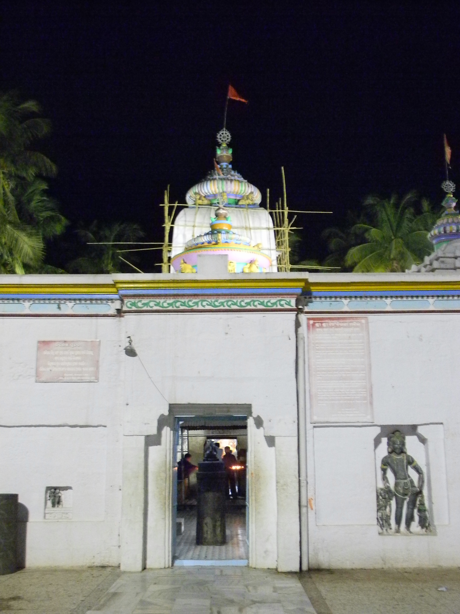

Wikimedia Commons · CC BY-SA 3.0 ⇗
Sthala Puranam
Jajpur, in Odisha on the banks of the Vaitarani, is the seat of Biraja Devi, one of the Shakti Peethas and the tutelary Goddess of a vast religious region. The Oddyana Pitham is considered the spiritual womb of Odisha.
Explanation
The temple of Biraja is unique in that the Goddess is conceived as the Navakalebara — the body of the world — and the eastern wall of her sanctum is carved with the 108 forms of the Goddess. The portion of Sati associated with the seat is the navel. Around the Vaitarani, Jajpur became the capital of the early Bhauma kings and a great yajna centre, and the city is still ringed by hundreds of ancient temples. A dip or a ritual bath in the holy Vaitarani is regarded as the equal of the Ganga for ancestral rites.
Why the temple is revered
Biraja is revered as the Adishakti mother of Odisha, celebrated in the Oriya tradition as the Goddess who receives the first offerings of the land. The temple is the centre of the famous Yajna (mela) at Vaitarani-bath, and the Goddess's presence is believed to protect the state's boundaries. Navaratri here is one of eastern India's grandest festivals.
🕉 Story
Biraja Devi is worshipped at the ancient sacred centre of Jajpur, traditionally associated with the Shakti Peetha tradition.
✨ Significance
Jajpur's sacred landscape is closely connected with the Vaitarani river and ancient Odishan religious history.